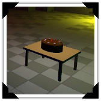
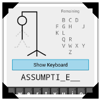
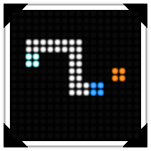
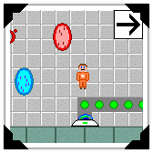

| mdhitchens at gmail dot com | |
| Professional profile | |
| GitHub | Personal source code repository |
| Blog | For long-form articles |
| Host for compositions |
Get Away From My Cake!Made in a month for the graphics course at UWaterloo (CS 488). Due to the nature of the project, I had to put more focus on the graphics (e.g. normal mapping, particle systems, etc). However, I managed to pull together something playable. |
 |
|  |
Hangman!Made in around 72 hours for a hackathon at BlackBerry in 2015. It's the classic game Hangman where you try to guess a word letter by letter! Disclaimer: Installing APKs from unknown sources is dangerous and not recommended; carefully consider who you trust before installing APKs, including me. |
ICCC (LD30)Made in 72 hours for Ludum Dare 30. Work for the (I)nternational (C)ommunication (C)onstruction and (C)onsulting! Use communication to spread your political agenda by connecting the world with the internet and shoving your message down the pipe! Beware of your demanding company, bankruptcy, and easy to piss off locals! |
 |
 |
Evolution is the Key (LD24)Made in 72 hours for Ludum Dare 24. You are trapped in a maze that constantly evolves around you. Made in Java with LWJGL. Use WASD to move, MOUSE to look, and the LEFT MOUSE BUTTON to fire your weapon. Scored #2 in Theme, #3 in Innovation. |
SDL SnakeIt's snake! Made in C! Using SDL! Programmed in one weekend in May 2013. Windows download requires the Visual C++ 2012 Redistributable which can be found here. Can be compiled for Linux and Mac; tested under Wine 1.7.25. |
 |
|  |
Portal GM: Pre-SlicePortal is my favourite video game so I tried to make a 2D version. There's no sound because I didn't know about SFXR back then. Made with GameMaker. Previously hosted on the YoYo Games Sandbox. Released May 2008. Only compiled for Windows, but works under Wine 1.7.25. |
This WebsiteI made this site from scratch to be lean and simple. Pure HTML, JavaScript, and CSS; no frameworks. |
Atom PluginsI use Atom, the text editor, a lot so I've made a couple plugins for it. language-batch provides syntax highlighting for Windows Batch files. love-launcher launches a LÖVE process for the current project. |
Zardwars RevivalAn encyclopedia for a now dead game. I coded the HTML, CSS, and PHP. All the information on the site was obtained by playing the game (when it was still alive). |
Vampyr UtilsUtilities for decoding various files used by Vampyr: The Talisman of Invocation. Coded in Java. I used these utilities to decode the image and map files which I then put into albums; I've provided links below. |
Here are a bunch of resources I've fallen in love with:
Engines
| PICO-8 | retro-style engine for simple arcade games |
| LÖVE | easy-to-learn-and-use 2D game engine utilizing Lua |
| jMonkeyEngine | 3D video game engine coded in Java |
| GameMaker | game making program for both the new and the experienced |
Libraries
| SDL | C library for 2D graphics, input handling, and much more |
| LWJGL | OpenGL, OpenAL, and OpenCL for Java |
Programs and Services
| Synfig | 2D Animation | very high learning curve but free and great for small animations |
| Blender | 3D Modelling | very complicated but very powerful |
| GIMP | Art (Bitmap) | all-purpose graphics editing and creation software |
| Inkscape | Art (Vector) | scalable vector graphics editor and creator |
| Audacity | Audio Editor | popular FOSS sound editor |
| Tiled | Level Editor | general-purpose 2D level editor |
| LMMS | MIDI Sequencer | difficult to use but free music creator |
| FamiTracker | Music | program for creating SNES music |
| Incompetech | Music | website with lots of high quality royalty-free music |
| MuseScore | Music Notation | open source music notation software |
| SFXR | Sound Effects | SNES-inspired sound effects generator |
| Atom | Text Editor | highly configurable advanced text editor; almost an IDE |
| Notepad++ | Text Editor | fast and reliable advanced text editor for Windows |
| Sublime Text | Text Editor | small, slick, sexy, and fast advanced text editor |